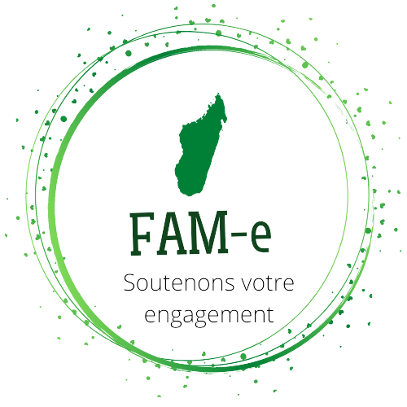

Développeur Junior Java et C# .Net
RANDRIANIAINA
Nomenjanahary Herizo
Je suis un passionné de la technologie qui a réussi à combiner son amour pour les réseaux et les systèmes en obtenant une Licence en Réseaux et Systèmes du Centre National de Télé-Enseignement de Madagascar en 2015. Mon parcours professionnel a débuté en tant que technicien réseaux, où j'ai pu démontrer mes compétences en résolvant des problèmes complexes et en gérant des projets de bout en bout. Au fil des années, j'ai évolué pour devenir opérateur senior, et finalement, chargé de formation qualité dans le BPO (Business Process Outsourcing). Cependant, après 8 ans d'expérience, j'ai décidé de me lancer dans une nouvelle aventure en me reconvertissant en tant que concepteur développeur pour explorer de nouveaux horizons professionnels et continuer à élargir mes compétences. Je suis ravi de pouvoir mettre mon expertise en réseaux et systèmes au service de la création de logiciels et d'applications innovants pour répondre aux besoins de l'industrie moderne. Je suis convaincu que cette reconversion me permettra de continuer à apprendre et à m'épanouir professionnellement.
Mes projets
-
FAM-e, plateforme association
Plateforme de mise en relation des associations avec les bailleurs ou donateurs
XAML pour le front
C# et PostgreSql pour le back
visual studio 2022 pour la conception
Git en tant que repository
 -
Annuaire universitaire
Application qui regroupe les instituts d'enseignements supérieurs et les universités en France
FXML et CSS pour le front
Java pour le back
Netbeans pour la conception
Git en tant que repository
Mes expériences professionnelles
-
Chargé qualité et formation
Oworkers Madagascar
Formation de nouvel agent
Contrôle interne de chaque produit traité
Suivre la mise en place des actions correctives et leur efficacité
-
Opérateur sénior
Oworkers Madagascar
Gérer la grille d’interface du Back office client
(Traitement, validation et intégration de données)
Assurer le planning d’intervention des techniciens
-
Opérateur sénior
Outsourcia Madagascar
Mettre à jour le site front office du client et ainsi procéder à la validation et traitement de données
Gestion de contenu : indexation et classification de donnée brute
Faire le suivi de la réception des différents produits commercialisés par le client de la part des fournisseurs
Mon parcours académique
-
Concepteur développeur d'application numérique
Inclusiv Academy
Formation intensive de 6 mois
-
Licence en réseau et système
Centre National de Télé-Enseignement de Madagascar
-
Baccalauréat
Série C